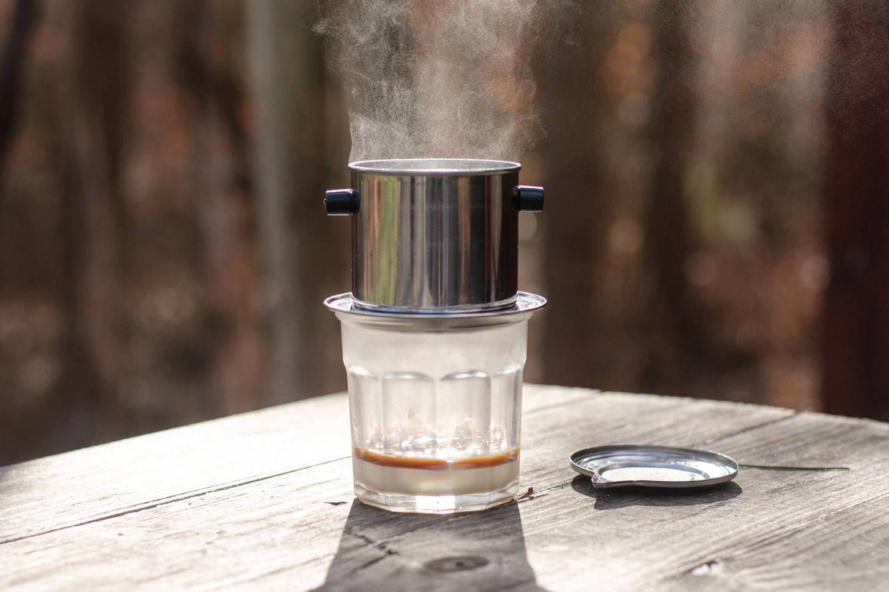

Vietnamese Phin

Description
The phin is a traditional way of preparing coffee.
It's sweet, it's strong, and its very simple to make.
- 14 grams of coffee
- JX-Pro Grind anywhere between 14-17 clicks
- Vietnamese Phin
- Roughly 14 ounces of water
- Set up your cup
- Add plate to the top of your cup
- Add basket on top of cup, add coffee inside basket
- Slowly pour water and let bloom for 45 seconds
- Shake out the basket